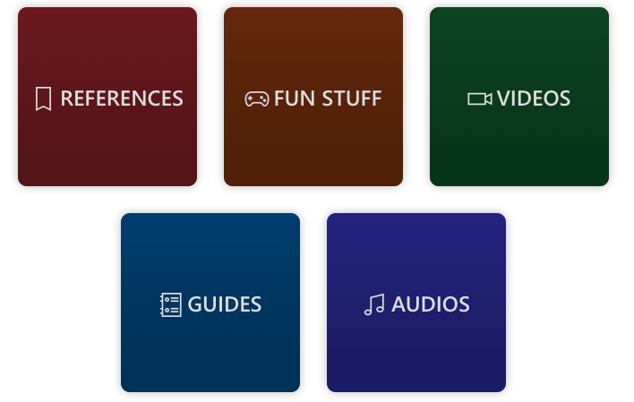
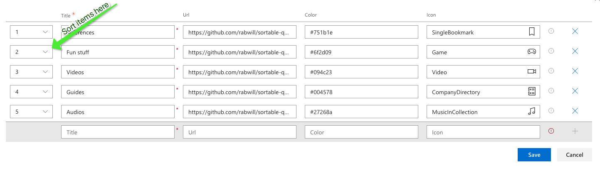
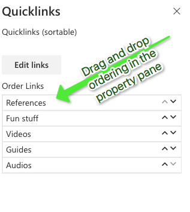

PropertyFieldOrder for easy ordering of quicklinks
Published on 04/04/2020
Clients love quicklinks and we already know 100 different ways to implement customized quicklinks webpart using SPFx.
One of the most easy and configurable way to implement a super simple quicklinks webpart without having a SharePoint list as back end, if you ask me is using the PnP spfx property control PropertyFieldCollectionData
Here is a quick one I created

Not only does this property field control gives you the ability to insert data into the webpart's configuration, but it also allows us to order them.

One interesting ask that came with it is to make the ordering experience simple. A simple drag and drop ordering perhaps?
Say no more, PnP spfx property control again to the rescue. We have the PropertyFieldOrder control will do just that. All you have to do is feed the items in the PropertyFieldCollectionData into this property control and now we have a much simpler ordering experience.
Below in my code you can see how I am passing the this.properties.links to the PropertyFieldOrder 's items property.
protected getPropertyPaneConfiguration(): IPropertyPaneConfiguration {
return {
pages:
[{header: {
description: "Quicklinks (sortable)"
},
groups:
[{
groupFields:
[PropertyFieldCollectionData('links', {
label: "",
value: this.properties.links, key: "123",
panelHeader: "", panelDescription: "",
manageBtnLabel: "Edit links", enableSorting: true,
fields: [
{ id: "title", title: "Title", type: CustomCollectionFieldType.string, required: true },
{ id: "url", title: "Url", type: CustomCollectionFieldType.url, required: false },
{ id: "color", title: "Color", type: CustomCollectionFieldType.string, required: false },
{ id: "icon", title: "Icon", type: CustomCollectionFieldType.fabricIcon, required: false },
]
}), PropertyFieldOrder("orderedItems", {
key: "orderedItems",
label: "Order Links",
items: this.properties.links,
textProperty: "title",
properties: this.properties,
onPropertyChange: this.onPropertyPaneFieldChanged
})]
}]
}]
};
}
End result of how my property pane looks

I can now simply drag and drop my links to order them.
If you want to try this out here is the source code
Make sure you keep an eye on what's available in PnP SPFx Controls at all times.There is just too much awesomeness already built for you to make your components even more awesome. Sharing is caring :)